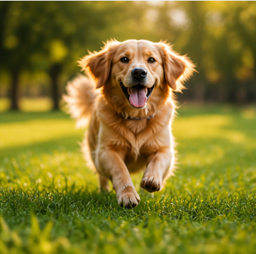
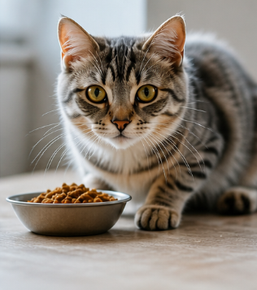
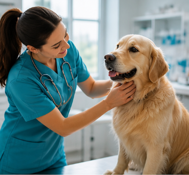

Cats require a balanced diet that is rich in protein to maintain their health and energy levels. High-quality cat food should include essential vitamins, minerals, and amino acids such as taurine. Always provide fresh water and avoid feeding your cat harmful human foods like chocolate, onions, or dairy products. A proper diet helps maintain a shiny coat, strong immune system, and overall vitality.

Training your dog is essential for both safety and good behavior. Start with basic commands such as sit, stay, and come. Consistency and positive reinforcement are key — reward your dog with treats or praise. Socialization is also important to ensure your dog is comfortable around other animals and people. Regular training sessions strengthen the bond between you and your pet while improving discipline.

Regular veterinary checkups are crucial for early detection of health issues. Routine visits allow vets to monitor your pet’s weight, vaccinations, dental health, and overall condition. Preventive care can save both money and your pet’s life by identifying problems before they become serious. Make sure to schedule at least one checkup per year, or more for older pets.